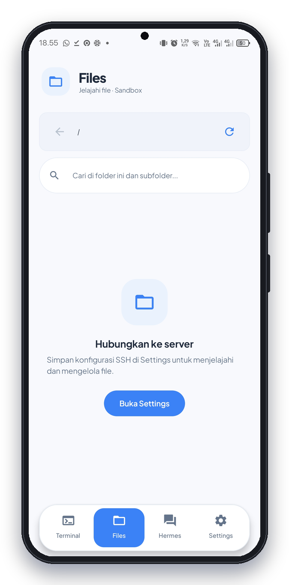
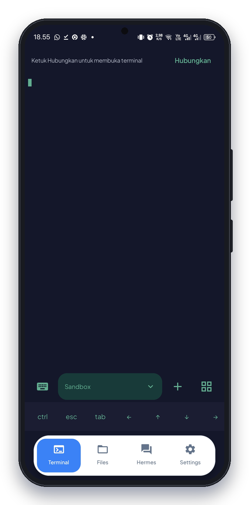
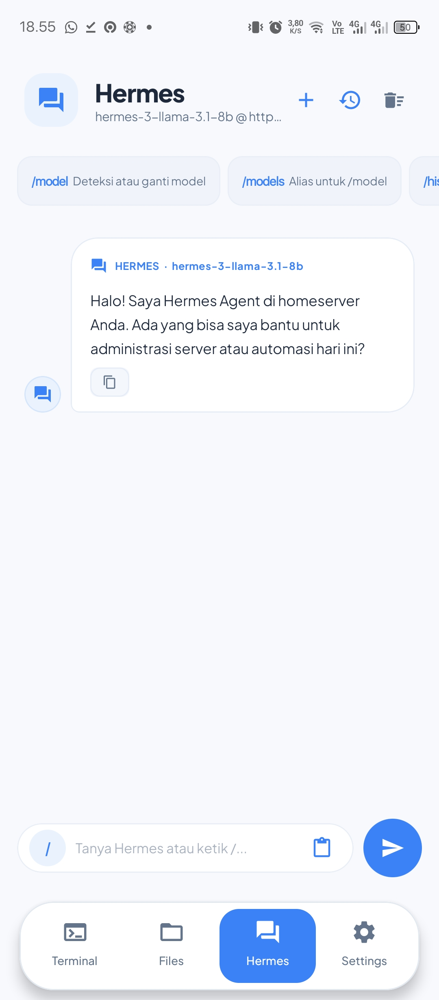
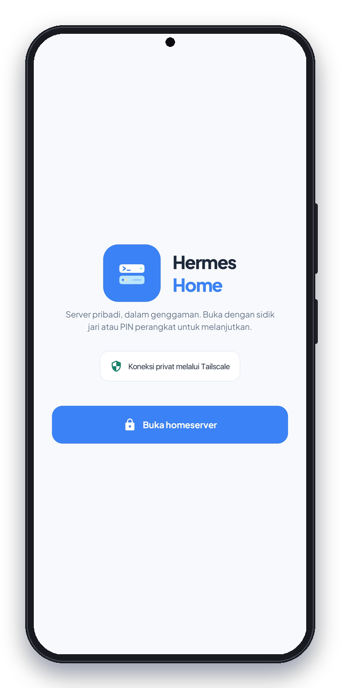

Siapkan akses privat
Pastikan ponsel dan homeserver dapat saling menjangkau lewat LAN atau jaringan privat.
Aplikasi Android untuk homeserver · masih beta
Satu tempat untuk membuka terminal, mengelola file server, dan berbincang dengan AI pilihan Anda.

SSH terminal SFTP Chat AI
Semua alat, satu aplikasi
Dirancang untuk homelab dan self-hosting: akses praktis dari ponsel, dengan koneksi dan layanan tetap berada dalam kendali Anda.

Terminal SSH
Buka sesi SSH interaktif dari ponsel, pindah di antara beberapa sesi, dan gunakan tombol pintasan untuk perintah yang sering dipakai.
Login SSH saat ini menggunakan nama pengguna dan kata sandi.
File SFTP
Jelajahi folder jarak jauh melalui SFTP. Cari file di dalam folder dan subfolder, lalu unggah atau rapikan file langsung dari Android.
Tampilan contoh memperlihatkan Files sebelum terhubung ke server.

Chat AI
Atur Base URL, model, dan API key untuk endpoint yang kompatibel dengan OpenAI. Anda juga bisa mengirim isi file untuk dibahas.
Kemampuan agent bergantung pada backend. Perintah yang disarankan tidak dijalankan otomatis.
Tetap di tangan Anda
Gunakan LAN atau jaringan privat seperti Tailscale untuk mengakses homeserver. Hermes Home tidak menyediakan server, cloud backend, atau layanan AI.
Mulai dengan yang Anda punya
Hermes Home terhubung ke infrastruktur yang sudah Anda kelola.
Pastikan ponsel dan homeserver dapat saling menjangkau lewat LAN atau jaringan privat.
Masukkan host, port, nama pengguna, dan kata sandi server di aplikasi.
Hubungkan endpoint OpenAI-compatible Anda untuk memakai fitur chat.
Lihat lebih dekat
Dirancang untuk ponsel, dengan ruang yang cukup untuk fokus pada pekerjaan.

Pertanyaan umum
Hermes Home adalah klien untuk server dan layanan yang Anda siapkan sendiri.
Tidak. Anda perlu menyiapkan server sendiri dan memastikan ponsel dapat mengaksesnya melalui LAN atau jaringan privat.
Bisa. LAN dan jaringan privat seperti Tailscale direkomendasikan untuk menjangkau homeserver.
Tidak. Anda mengatur endpoint OpenAI-compatible dan menyediakan API key serta layanan AI sendiri. Anda juga bisa memakai backend self-hosted yang sesuai.
Belum. Versi yang direkomendasikan adalah 1.3.1-beta.1 dan tetap berstatus beta.
Beta 1.3.1 tersedia publik di GitHub. Ini tetap rilis beta, bukan versi stabil.
Hermes Home 1.3.1-beta.1
Versi 1.3.1-beta.1 tersedia untuk dicoba. Hermes Home masih dalam tahap beta dan memerlukan server SSH/SFTP milik Anda.
Unduh Hermes Home Lihat catatan rilis di GitHub ↗